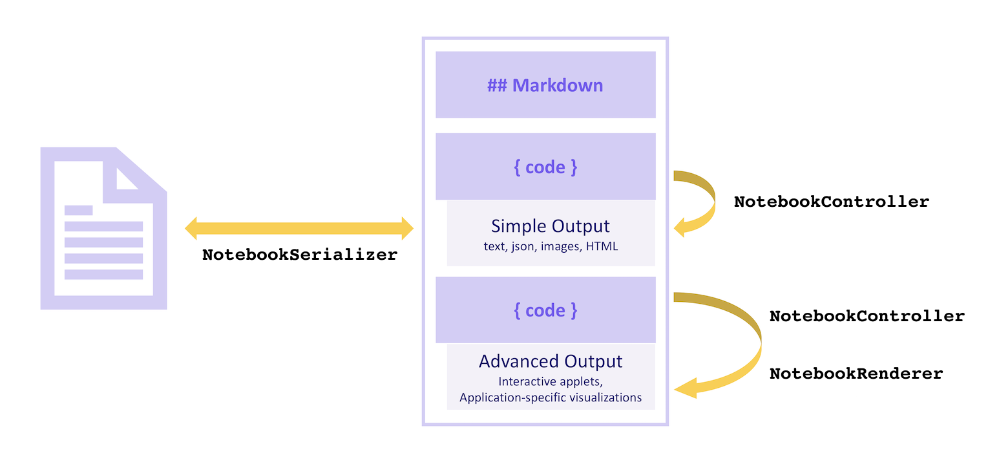
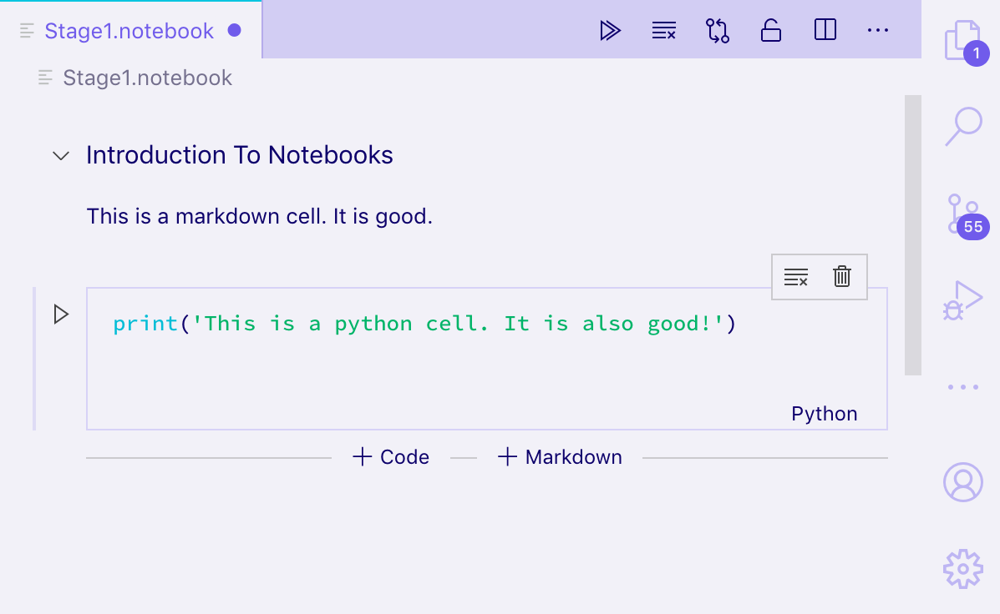
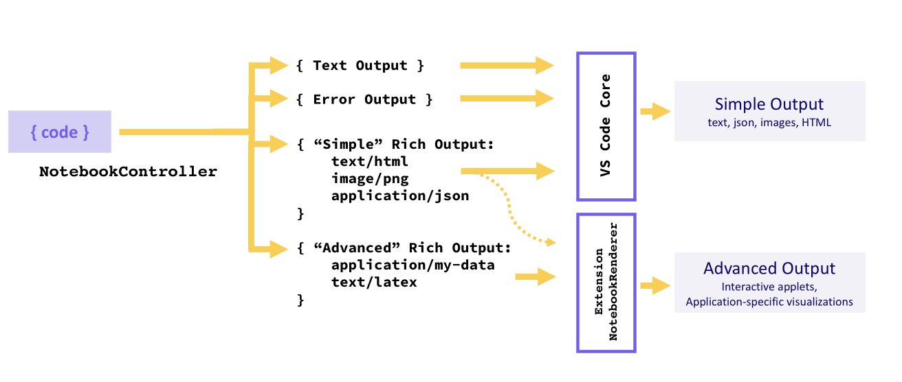
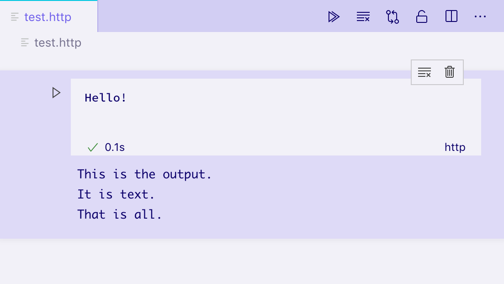
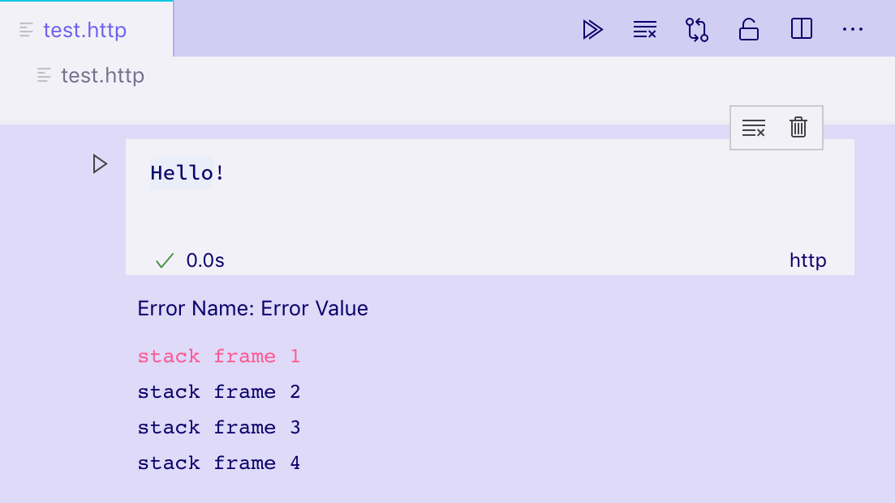
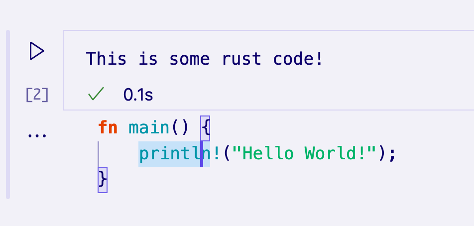
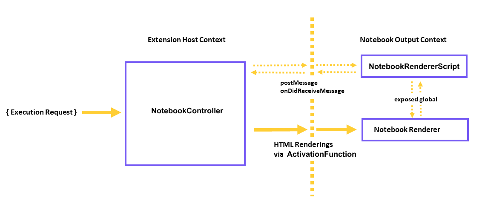

Notebook API
The Notebook API allows Visual Studio Code extensions to open files as notebooks, execute notebook code cells, and render notebook outputs in a variety of rich and interactive formats. You may know of popular notebook interfaces like Jupyter Notebook or Google Colab – the Notebook API allows for similar experiences inside Visual Studio Code.
Parts of a Notebook
A notebook consists of a sequence of cells and their outputs. The cells of a notebook can be either Markdown cells or code cells, and are rendered within the core of VS Code. The outputs can be of various formats. Some output formats, such as plain text, JSON, images, and HTML are rendered by VS Code core. Others, such as application-specific data or interactive applets, are rendered by extensions.
Cells in a notebook are read and written to the file system by a NotebookSerializer, which handles reading data from the file system and converting it into a description of cells, as well as persisting modifications to the notebook back to the file system. The code cells of a notebook can be executed by a NotebookController, which takes the contents of a cell and from it produces zero or more outputs in a variety of formats ranging from plain text to formatted documents or interactive applets. Application-specific output formats and interactive applet outputs are rendered by a NotebookRenderer.
Visually:

Serializer
NotebookSerializer API Reference
A NotebookSerializer is responsible for taking the serialized bytes of a notebook and deserializing those bytes into NotebookData, which contains list of Markdown and code cells. It is responsible for the opposite conversion as well: taking NotebookData and converting the data into serialized bytes to be saved.
Samples:
- JSON Notebook Serializer: Simple example notebook that takes JSON input and outputs prettified JSON in a custom
NotebookRenderer. - Markdown Serializer: Open and edit Markdown files as a notebook.
Example
In this example, we build a simplified notebook provider extension for viewing files in the Jupyter Notebook format with a .notebook extension.
A notebook serializer is declared in package.json under the contributes.notebooks section as follows:
{
...
"activationEvents": ["onNotebook:my-notebook"],
"contributes": {
...
"notebooks": [
{
"id": "my-notebook",
"type": "my-notebook",
"displayName": "My Notebook",
"selector": [
{
"filenamePattern": "*.notebook"
}
]
}
]
}
}
The notebook serializer is then registered in the extension's activation event:
import { TextDecoder, TextEncoder } from 'util';
import * as vscode from 'vscode';
export function activate(context: vscode.ExtensionContext) {
context.subscriptions.push(
vscode.workspace.registerNotebookSerializer('my-notebook', new SampleSerializer())
);
}
interface RawNotebookCell {
language: string;
value: string;
kind: vscode.NotebookCellKind;
}
class SampleSerializer implements vscode.NotebookSerializer {
async deserializeNotebook(
content: Uint8Array,
_token: vscode.CancellationToken
): Promise<vscode.NotebookData> {
var contents = new TextDecoder().decode(content);
let raw: RawNotebookCell[];
try {
raw = <RawNotebookCell[]>JSON.parse(contents);
} catch {
raw = [];
}
const cells = raw.map(
item => new vscode.NotebookCellData(item.kind, item.value, item.language)
);
return new vscode.NotebookData(cells);
}
async serializeNotebook(
data: vscode.NotebookData,
_token: vscode.CancellationToken
): Promise<Uint8Array> {
let contents: RawNotebookCell[] = [];
for (const cell of data.cells) {
contents.push({
kind: cell.kind,
language: cell.languageId,
value: cell.value
});
}
return new TextEncoder().encode(JSON.stringify(contents));
}
}
Now try running your extension and opening a Jupyter Notebook formatted file saved with the .notebook extension:

You should be able to open Jupyter-formatted notebooks and view their cells as both plain text and rendered Markdown, as well as edit the cells. However, outputs will not be persisted to disk; to save outputs you would need to also serialize and deserialize the outputs of cells from NotebookData.
To run a cell, you will need to implement a NotebookController.
Controller
NotebookController API Reference
A NotebookController is responsible for taking a code cell and executing the code to produce some or no outputs.
A controller is directly associated with a notebook serializer and a type of notebook by setting the NotebookController#notebookType property on creation of the controller. Then the controller is registered globally by pushing the controller onto the extension subscriptions on activate of the extension.
export function activate(context: vscode.ExtensionContext) {
context.subscriptions.push(new Controller());
}
class Controller {
readonly controllerId = 'my-notebook-controller-id';
readonly notebookType = 'my-notebook';
readonly label = 'My Notebook';
readonly supportedLanguages = ['python'];
private readonly _controller: vscode.NotebookController;
private _executionOrder = 0;
constructor() {
this._controller = vscode.notebooks.createNotebookController(
this.controllerId,
this.notebookType,
this.label
);
this._controller.supportedLanguages = this.supportedLanguages;
this._controller.supportsExecutionOrder = true;
this._controller.executeHandler = this._execute.bind(this);
}
private _execute(
cells: vscode.NotebookCell[],
_notebook: vscode.NotebookDocument,
_controller: vscode.NotebookController
): void {
for (let cell of cells) {
this._doExecution(cell);
}
}
private async _doExecution(cell: vscode.NotebookCell): Promise<void> {
const execution = this._controller.createNotebookCellExecution(cell);
execution.executionOrder = ++this._executionOrder;
execution.start(Date.now()); // Keep track of elapsed time to execute cell.
/* Do some execution here; not implemented */
execution.replaceOutput([
new vscode.NotebookCellOutput([
vscode.NotebookCellOutputItem.text('Dummy output text!')
])
]);
execution.end(true, Date.now());
}
}
If you're publishing a NotebookController-providing extension separately from its serializer, then add an entry like notebookKernel<ViewTypeUpperCamelCased> to the keywords in its package.json. For example, if you published an alternative kernel for the github-issues notebook type, you should add a keyword notebookKernelGithubIssues keyword to your extension.
Samples:
- GitHub Issues Notebook: Controller to execute queries for GitHub Issues
- REST Book: Controller to run REST queries.
- Regexper notebooks: Controller to visualize regular expressions.
Output types
Outputs must be in one of three formats: Text Output, Error Output, or Rich Output. A kernel may provide multiple outputs for a single execution of a cell, in which case they will be displayed as a list.
Simple formats like Text Output, Error Output, or "simple" variants of Rich Output (HTML, Markdown, JSON, etc.) are rendered by VS Code core, whereas application specific Rich Output types are rendered by a NotebookRenderer. An extension may optionally choose to render "simple" Rich Outputs itself, for instance to add LaTeX support to Markdown outputs.

Text Output
Text outputs are the most simple output format, and work much like many REPLs you may be familiar with. They consist only of a text field, which is rendered as plain text in the cell's output element:
vscode.NotebookCellOutputItem.text('This is the output...');

Error Output
Error outputs are helpful for displaying runtime errors in a consistent and understandable manner. They support standard Error objects.
try {
/* Some code */
} catch (error) {
vscode.NotebookCellOutputItem.error(error);
}

Rich Output
Rich outputs are the most advanced form of displaying cell outputs. They allow for providing many different representations of the output data, keyed by mimetype. For example, if a cell output was to represent a GitHub Issue, the kernel might produce a rich output with several properties on its data field:
- A
text/htmlfield containing a formatted view of the issue. - A
text/x-jsonfield containing a machine readable view. - An
application/github-issuefield that aNotebookRenderercould use to create a fully interactive view of the issue.
In this case, the text/html and text/x-json views will be rendered by VS Code natively, but the application/github-issue view will display an error if no NotebookRenderer was registered to that mimetype.
execution.replaceOutput([new vscode.NotebookCellOutput([
vscode.NotebookCellOutputItem.text('<b>Hello</b> World', 'text/html'),
vscode.NotebookCellOutputItem.json({ hello: 'world' }),
vscode.NotebookCellOutputItem.json({ custom-data-for-custom-renderer: 'data' }, 'application/custom'),
])]);

By default, VS Code can render the following mimetypes:
- application/javascript
- text/html
- image/svg+xml
- text/markdown
- image/png
- image/jpeg
- text/plain
VS Code will render these mimetypes as code in a built-in editor:
- text/x-json
- text/x-javascript
- text/x-html
- text/x-rust
- ... text/x-LANGUAGE_ID for any other built-in or installed languages.
This notebook is using the built-in editor to display some Rust code: 
To render an alternative mimetype, a NotebookRenderer must be registered for that mimetype.
Notebook Renderer
A notebook renderer is responsible for taking output data of a specific mimetype and providing a rendered view of that data. A renderer shared by output cells can maintain global state between these cells. The complexity of the rendered view can range from simple static HTML to dynamic fully interactive applets. In this section, we'll explore various techniques for rendering an output representing a GitHub Issue.
You can get started quickly using boilerplate from our Yeoman generators. To do so, first install Yeoman and the VS Code Generators using:
npm install -g yo generator-code
Then, run yo code and choose New Notebook Renderer (TypeScript).
If you don't use this template, you'll just want to make sure that you add notebookRenderer to the keywords in your extension's package.json, and mention its mimetype somewhere in the extension name or description, so that users can find your renderer.
A Simple, Non-Interactive Renderer
Renderers are declared for a set of mimetypes by contributing to the contributes.notebookRenderer property of an extension's package.json. This renderer will work with input in the ms-vscode.github-issue-notebook/github-issue format, which we will assume some installed controller is able to provide:
{
"activationEvents": ["...."],
"contributes": {
...
"notebookRenderer": [
{
"id": "github-issue-renderer",
"displayName": "GitHub Issue Renderer",
"entrypoint": "./out/renderer.js",
"mimeTypes": [
"ms-vscode.github-issue-notebook/github-issue"
]
}
]
}
}
Output renderers are always rendered in a single iframe, separate from the rest of VS Code's UI, to ensure they don't accidentally interfere or cause slowdowns in VS Code. The contribution refers to an "entrypoint" script, which is loaded into the notebook's iframe right before any output needs to be rendered. Your entrypoint needs to be a single file, which you can write yourself, or use a bundler like Webpack, Rollup, or Parcel to create.
When it's loaded, your entrypoint script should export ActivationFunction from vscode-notebook-renderer to render your UI once VS Code is ready to render your renderer. For example, this will put all your GitHub issue data as JSON into the cell output:
import type { ActivationFunction } from 'vscode-notebook-renderer';
export const activate: ActivationFunction = context => ({
renderOutputItem(data, element) {
element.innerText = JSON.stringify(data.json());
}
});
You can refer to the complete API definition here. If you're using TypeScript, you can install @types/vscode-notebook-renderer and then add vscode-notebook-renderer to the types array in your tsconfig.json to make these types available in your code.
To create richer content, you could manually create DOM elements, or use a framework like Preact and render it into the output element, for example:
import type { ActivationFunction } from 'vscode-notebook-renderer';
import { h, render } from 'preact';
const Issue: FunctionComponent<{ issue: GithubIssue }> = ({ issue }) => (
<div key={issue.number}>
<h2>
{issue.title}
(<a href={`https://github.com/${issue.repo}/issues/${issue.number}`}>#{issue.number}</a>)
</h2>
<img src={issue.user.avatar_url} style={{ float: 'left', width: 32, borderRadius: '50%', marginRight: 20 }} />
<i>@{issue.user.login}</i> Opened: <div style="margin-top: 10px">{issue.body}</div>
</div>
);
const GithubIssues: FunctionComponent<{ issues: GithubIssue[]; }> = ({ issues }) => (
<div>{issues.map(issue => <Issue key={issue.number} issue={issue} />)}</div>
);
export const activate: ActivationFunction = (context) => ({
renderOutputItem(data, element) {
render(<GithubIssues issues={data.json()} />, element);
}
});
Running this renderer on an output cell with a ms-vscode.github-issue-notebook/github-issue data field gives us the following static HTML view:

If you have elements outside of the container or other asynchronous processes, you can use disposeOutputItem to tear them down. This event will fire when output is cleared, a cell is deleted, and before new output is rendered for an existing cell. For example:
const intervals = new Map();
export const activate: ActivationFunction = (context) => ({
renderOutputItem(data, element) {
render(<GithubIssues issues={data.json()} />, element);
intervals.set(data.mime, setInterval(() => {
if(element.querySelector('h2')) {
element.querySelector('h2')!.style.color = `hsl(${Math.random() * 360}, 100%, 50%)`;
}
}, 1000));
},
disposeOutputItem(id) {
clearInterval(intervals.get(id));
intervals.delete(id);
}
});
It's important to bear in mind that all outputs for a notebook are rendered in different elements in the same iframe. If you use functions like document.querySelector, make sure to scope it to the specific output you're interested in to avoid conflicting with other outputs. In this example, we use element.querySelector to avoid that issue.
Interactive Notebooks (communicating with the controller)
Imagine we want to add the ability to view an issue's comments after clicking a button in the rendered output. Assuming a controller can provide issue data with comments under the ms-vscode.github-issue-notebook/github-issue-with-comments mimetype, we might try to retrieve all the comments up front and implement it as follows:
const Issue: FunctionComponent<{ issue: GithubIssueWithComments }> = ({ issue }) => {
const [showComments, setShowComments] = useState(false);
return (
<div key={issue.number}>
<h2>
{issue.title}
(<a href={`https://github.com/${issue.repo}/issues/${issue.number}`}>#{issue.number}</a>)
</h2>
<img src={issue.user.avatar_url} style={{ float: 'left', width: 32, borderRadius: '50%', marginRight: 20 }} />
<i>@{issue.user.login}</i> Opened: <div style="margin-top: 10px">{issue.body}</div>
<button onClick={() => setShowComments(true)}>Show Comments</button>
{showComments && issue.comments.map(comment => <div>{comment.text}</div>)}
</div>
);
};
This immediately raises some flags. For one, we're loading full comment data for all issues, even before we've clicked the button. Additionally, we require controller support for a whole different mimetype even though we just want to show a bit more data.
Instead, the controller can provide additional functionality to the renderer by including a preload script which VS Code will load in the iframe as well. This script has access global functions postKernelMessage and onDidReceiveKernelMessage that can be used to communicate with the controller.

For example, you might modify your controller rendererScripts to reference a new file where you create a connection back to the Extension Host, and expose a global communication script for the renderer to use.
In your controller:
class Controller {
// ...
readonly rendererScriptId = 'my-renderer-script';
constructor() {
// ...
this._controller.rendererScripts.push(
new vscode.NotebookRendererScript(
vscode.Uri.file(/* path to script */),
rendererScriptId
)
);
}
}
In your package.json specify your script as a dependency of your renderer:
{
"activationEvents": ["...."],
"contributes": {
...
"notebookRenderer": [
{
"id": "github-issue-renderer",
"displayName": "GitHub Issue Renderer",
"entrypoint": "./out/renderer.js",
"mimeTypes": [...],
"dependencies": [
"my-renderer-script"
]
}
]
}
}
In your script file you can declare communication functions to communicate with the controller:
import 'vscode-notebook-renderer/preload';
globalThis.githubIssueCommentProvider = {
loadComments(issueId: string, callback: (comments: GithubComment[]) => void) {
postKernelMessage({ command: 'comments', issueId });
onDidReceiveKernelMessage(event => {
if (event.data.type === 'comments' && event.data.issueId === issueId) {
callback(event.data.comments);
}
});
}
};
And then you can consume that in the renderer. You want to make sure that you check whether the global exposed by the controller's render scripts is available, since other developers might create github issue output in other notebooks and controllers that don't implement the githubIssueCommentProvider. In this case, we'll only show the Load Comments button if the global is available:
const canLoadComments = globalThis.githubIssueCommentProvider !== undefined;
const Issue: FunctionComponent<{ issue: GithubIssue }> = ({ issue }) => {
const [comments, setComments] = useState([]);
const loadComments = () =>
globalThis.githubIssueCommentProvider.loadComments(issue.id, setComments);
return (
<div key={issue.number}>
<h2>
{issue.title}
(<a href={`https://github.com/${issue.repo}/issues/${issue.number}`}>#{issue.number}</a>)
</h2>
<img src={issue.user.avatar_url} style={{ float: 'left', width: 32, borderRadius: '50%', marginRight: 20 }} />
<i>@{issue.user.login}</i> Opened: <div style="margin-top: 10px">{issue.body}</div>
{canLoadComments && <button onClick={loadComments}>Load Comments</button>}
{comments.map(comment => <div>{comment.text}</div>)}
</div>
);
};
Finally, we want to set up communication to the controller. NotebookController.onDidReceiveMessage method is called when a renderer posts a message using the global postKernelMessage function. To implement this method, attach to onDidReceiveMessage to listen for messages:
class Controller {
// ...
constructor() {
// ...
this._controller.onDidReceiveMessage(event => {
if (event.message.command === 'comments') {
_getCommentsForIssue(event.message.issueId).then(
comments =>
this._controller.postMessage({
type: 'comments',
issueId: event.message.issueId,
comments
}),
event.editor
);
}
});
}
}
Interactive Notebooks (communicating with the extension host)
Imagine we want to add the ability to open the output item within a separate editor. To make this possible, the renderer needs to be able to send a message to the extension host, which will then launch the editor.
This would be useful in scenarios where the renderer and controller are two seprate extensions.
In the package.json of the renderer extension specify the value for requiresMessaging as optional which allows your renderer to work in both situations when it has and doesn't have access to the extension host.
{
"activationEvents": ["...."],
"contributes": {
...
"notebookRenderer": [
{
"id": "output-editor-renderer",
"displayName": "Output Editor Renderer",
"entrypoint": "./out/renderer.js",
"mimeTypes": [...],
"requiresMessaging": "optional"
}
]
}
}
The possible values for requiresMessaging include:
always: Messaging is required. The renderer will only be used when it's part of an extension that can be run in an extension host.optional: The renderer is better with messaging when the extension host is available, but it's not required to install and run the renderer.never: The renderer does not require messaging.
The last two options are preferred, as this ensures the portability of renderer extensions to other contexts where the extension host might not necessarily be available.
The renderer script file can setup communications as follows:
import { ActivationFunction } from 'vscode-notebook-renderer';
export const activate: ActivationFunction = (context) => ({
renderOutputItem(data, element) {
// Render the output using the output `data`
....
// The availability of messaging depends on the value in `requiresMessaging`
if (!context.postMessage){
return;
}
// Upon some user action in the output (such as clicking a button),
// send a message to the extension host requesting the launch of the editor.
document.querySelector('#openEditor').addEventListener('click', () => {
context.postMessage({
request: 'showEditor',
data: '<custom data>'
})
});
}
});
And then you can consume that message in the extension host as follows:
const messageChannel = notebooks.createRendererMessaging('output-editor-renderer');
messageChannel.onDidReceiveMessage(e => {
if (e.message.request === 'showEditor') {
// Launch the editor for the output identified by `e.message.data`
}
});
Note:
- To ensure your extension is running in the extension host before messages are delivered, add
onRenderer:<your renderer id>to youractivationEventsand set up communication in your extension'sactivatefunction. - Not all messages sent by the renderer extension to the extension host are guaranteed to be delivered. A user could close the notebook before messages from the renderer are delivered.
Supporting debugging
For some controllers, such as those that implement a programming language, it can be desirable to allow debugging a cell's execution. To add debugging support, a notebook kernel can implement a debug adapter, either by directly implementing the debug adapter protocol (DAP), or by delegating and transforming the protocol to an existing notebook debugger (as done in the 'vscode-simple-jupyter-notebook' sample). A much simpler approach is to use an existing unmodified debug extension and transform the DAP for notebook needs on the fly (as done in 'vscode-nodebook').
Samples:
- vscode-nodebook: Node.js notebook with debugging support provided by VS Code's built-in JavaScript debugger and some simple protocol transformations
- vscode-simple-jupyter-notebook: Jupyter notebook with debugging support provided by the existing Xeus debugger